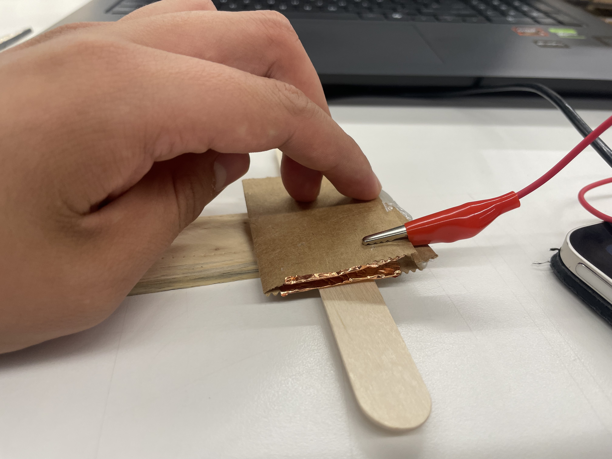

<div class="textcontainer"> <p class="margin"> </p> <h3>Week 6: Electronic Inputs</h3> <h4>Assignment 1: Capactive Sensor<h4> <h5>For this assignment my team and I had the luck to pick out the paper that asked us to measure wind velocity. The challenge was to create a sensor using the concept of capacitve sensing. After a lot of brainstorming and attempts of being human fans, Kieran suggested to place the two copper layers on a thin cardboard and let one be fixed and the other one be able to move with the wind. </h5> <img src="S_1.png".png alt="Exponential Behavior Graph" width="500" /> <h5>However, after repeatedly blowing on the sensor, we noticed that if we blowed to hard the layers would touch each other, ruining the sensor, To fix this we added hot glue to the corners. This worked well, but the aligator cip still touched the other layer, so it was relocated like this: </h5> <h5> Fortunately, a friend from Purdue came to visit over the weekend and he agreed to help me demonstrate the sensor: </h5> <video width="640" height="480" controls> <source src="Blow (1).mp4" type="video/mp4"> </video> <h5> Here are the different capacitance values we got from the sensor: <ul> <li> 1 (180°): 120000 Ω </li> <li> 2 (90°): 122000 Ω</li> <li> 3 (30°): 130000 Ω</li> <li> 4 (Silicon Touching)*: 131000 Ω</li> <li> 5 (ST +)*: 145000 Ω</li> <li> 6 (ST ++)*: 156000 Ω</li> <li> 7 (ST +++)*: 190000 Ω</li> <li> 8 (ST ++++)*: 210000 Ω</li> </ul> </h5>  <img src="0.jpg".png alt="Exponential Behavior Graph" width="500" /> <h4>Assignment 2: [Use + Calibrate Another Sensor]</h4> <h5> For the second part of this assignment we had to try using another sensor and calibrating it. I remember having written a paper about echolocaation because I found it fascinating how bats transform sound waves into vision. Consequently, I decided to use the ultrasonic sensor to measure distance. The ultrasonic sensor works by sending a 'trigger' wave (shouts) and then listens for the echo (listns). The time it takes for the listening part to listen the echo back is used to calculate the distance. Here is the main part of my code (I adapted it from the example 'Ping'): </h5> <scrollable-code> //These are the pins for our shoutingPin (the one that emits the sound), and for the listeningPin (the one that listens and waits for the sound to return) const int shoutingPin = 26; const int listeningPin = 25; const int lightPin = 33; void setup() { // initialize serial communication: Serial.begin(9600); //shoutingPin is an Output pin while listeningPin is an input one pinMode(shoutingPin, OUTPUT); pinMode(listeningPin, INPUT); pinMode(lightPin, OUTPUT); } void loop() { // establish variables for duration of the ping, and the distance result // in inches and centimeters: long duration, inches, cm; //Turns off the shoutingPin and then waits two microseconds using the delay function digitalWrite(shoutingPin, LOW); delayMicroseconds(2); //shoutingPin shouts and then waits 5 microseconds digitalWrite(shoutingPin, HIGH); delayMicroseconds(10); //shoutingPin shuts up digitalWrite(shoutingPin, LOW); //listeningPin listens duration = pulseIn(listeningPin, HIGH); // convert the time into a distance inches = microsecondsToInches(duration); cm = microsecondsToCentimeters(duration); //Writes the results Serial.print(inches); Serial.print("in, "); Serial.print(cm); Serial.print("cm"); Serial.println(); delay(100); if(cm >= 10 ){ digitalWrite(lightPin, HIGH); Serial.print("LIGHT"); } else{ digitalWrite(lightPin, LOW); Serial.print("SHADOWS"); }; } </scrollable-code> <h5> The ultrasonic sensor circuit was the following:</h5> <h5> As for the calibration segment of the assignment, I decided to use the sensor to light up an LED when something was 10cm or closer to the sensor. Here is a video of the final result: </h5> <video width="640" height="480" controls> <source src="Hand.mp4" type="video/mp4"> </video> <h3>Key Takeaways</h3> <br/> <h4>1. Capacitive sensors can measure a vast array of physical quantity, one has to be creative.</h4> <br/> <h4>2. Nature inspires technology. </h4> <br/> <h4>3. Capacitive sensors report data with an exponentially decreasing accuracy </h4> <br/> <h4>2. Ultrasonic sensors are reliable and straightforward. </h4> </div>